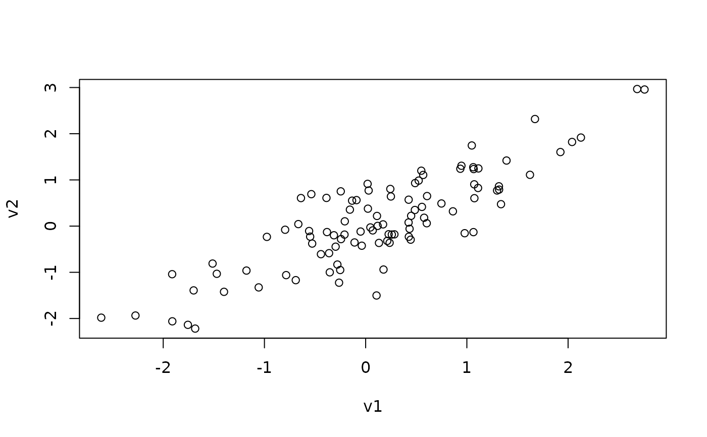

Simulate data with a specified correlation in relation to an existing variable.
Arguments
- y
The existing variable against which to simulate a complement variable.
- rho
The correlation magnitude, ranging from [-1, 1].
- x
(optional) Vector with the same length as
y. Used for calculating the residuals of the least squares regression ofxagainsty, to remove theycomponent fromx.
See also
https://stats.stackexchange.com/a/313138/20338
Other simulation:
simulateAUC(),
simulateIndirectEffect()
Examples
v1 <- rnorm(100)
complement(y = v1, rho = .5)
#> 1 2 3 4 5 6
#> 0.35458745 0.40045526 1.89555570 0.44679889 0.49929673 0.60133660
#> 7 8 9 10 11 12
#> 0.85680813 -0.14383024 -0.02278925 -0.35670924 -0.96844074 -0.65373312
#> 13 14 15 16 17 18
#> -0.69120714 0.70917123 0.06746997 -0.51038571 -0.89770840 0.21949938
#> 19 20 21 22 23 24
#> -1.76114122 -0.50075851 0.52377949 0.43862819 -0.22862074 -1.14425287
#> 25 26 27 28 29 30
#> 1.51070471 0.43950966 0.95198632 2.32978512 -1.08212681 0.60423987
#> 31 32 33 34 35 36
#> -1.39153764 0.34039149 0.66154343 -0.12390701 -1.21597194 -0.60037040
#> 37 38 39 40 41 42
#> 0.82236498 0.73482113 -1.14400032 0.81841119 0.40280802 0.68957707
#> 43 44 45 46 47 48
#> -1.29011720 0.39583607 0.12903131 -0.00104557 -2.24324488 -1.26680461
#> 49 50 51 52 53 54
#> -0.61916160 0.26347309 -0.14200790 -0.45432771 -0.89407864 -0.84316518
#> 55 56 57 58 59 60
#> 1.62388628 0.83819288 1.17311209 1.03813512 -0.25246881 -1.29205626
#> 61 62 63 64 65 66
#> -0.30686029 1.78705282 -0.13826610 -0.52230269 -1.24399137 1.48458756
#> 67 68 69 70 71 72
#> 0.11433390 2.15421156 -1.47120613 2.06704433 1.01913135 0.70995164
#> 73 74 75 76 77 78
#> 1.06905196 0.02790323 -0.35407264 -0.64543900 1.66132751 0.77868618
#> 79 80 81 82 83 84
#> 0.04826809 1.32549483 1.58844379 0.28257873 -0.67652143 0.71362599
#> 85 86 87 88 89 90
#> -0.67291708 -0.72840384 -3.09055925 -0.38221579 -1.34545541 -0.92559184
#> 91 92 93 94 95 96
#> -1.82898757 2.67002689 -1.23082025 -1.07012885 0.69474393 -1.44247632
#> 97 98 99 100
#> 0.62424166 0.93929601 0.57166533 -0.53728807
complement(y = v1, rho = -.5)
#> 1 2 3 4 5 6
#> -1.59964704 1.32532609 -0.57746064 -0.28655743 0.75125481 -0.32096253
#> 7 8 9 10 11 12
#> -1.95524038 1.12422415 0.80863090 -0.42352155 1.07169019 -0.51354269
#> 13 14 15 16 17 18
#> -0.33226623 -1.27114417 0.50458221 -2.30314242 -0.01664439 -0.50414322
#> 19 20 21 22 23 24
#> 0.31163003 0.73487618 1.17501205 -2.10010640 -0.85044244 1.50240789
#> 25 26 27 28 29 30
#> 0.98030917 1.18459957 -1.52601915 -0.34531325 -0.03968050 -0.40912642
#> 31 32 33 34 35 36
#> 0.30597005 1.17013936 -1.23106621 -0.32315205 -0.95150572 -0.68888098
#> 37 38 39 40 41 42
#> 1.24878328 -1.05439250 1.51514379 -1.94453344 -0.34605947 1.14938628
#> 43 44 45 46 47 48
#> -0.48752007 -0.90489985 -0.65059453 -0.06515507 -0.15333017 -1.31930869
#> 49 50 51 52 53 54
#> 1.05279195 -0.94253387 -0.38088964 1.14875690 0.86274966 -2.09288683
#> 55 56 57 58 59 60
#> -0.87065074 -0.05030089 -0.74926747 1.34276308 1.54366745 0.67020197
#> 61 62 63 64 65 66
#> 0.56228153 -0.23696305 -0.20541215 -1.55415403 0.05941090 -0.04459145
#> 67 68 69 70 71 72
#> 0.61420536 0.35507659 0.62098436 0.26284608 0.98626026 -0.13977646
#> 73 74 75 76 77 78
#> -0.40765430 -0.80820290 -1.49367487 0.42828860 1.12331688 -2.28901843
#> 79 80 81 82 83 84
#> -1.06406770 0.22444013 -0.20591437 2.00977564 -0.11251686 -0.51262287
#> 85 86 87 88 89 90
#> 1.52504788 1.47041510 1.14405482 0.01874037 0.83961435 2.02289067
#> 91 92 93 94 95 96
#> 1.51542352 -1.96406247 -0.37441769 -0.26046446 0.33080366 -1.37006993
#> 97 98 99 100
#> 0.01084744 -1.17291988 0.78378162 0.70280030
v2 <- complement(y = v1, rho = .85)
plot(v1, v2)
